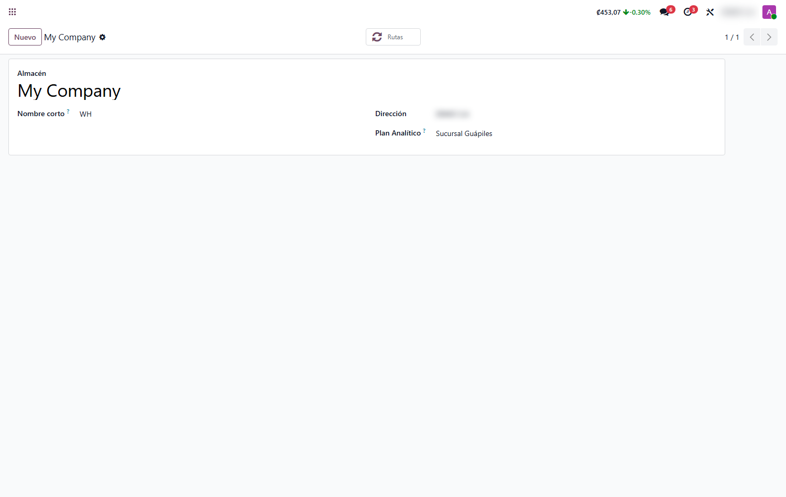
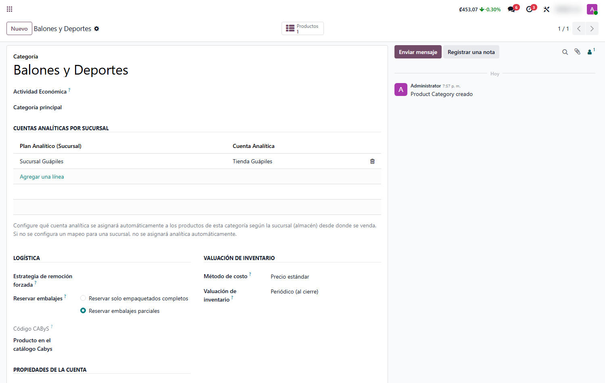
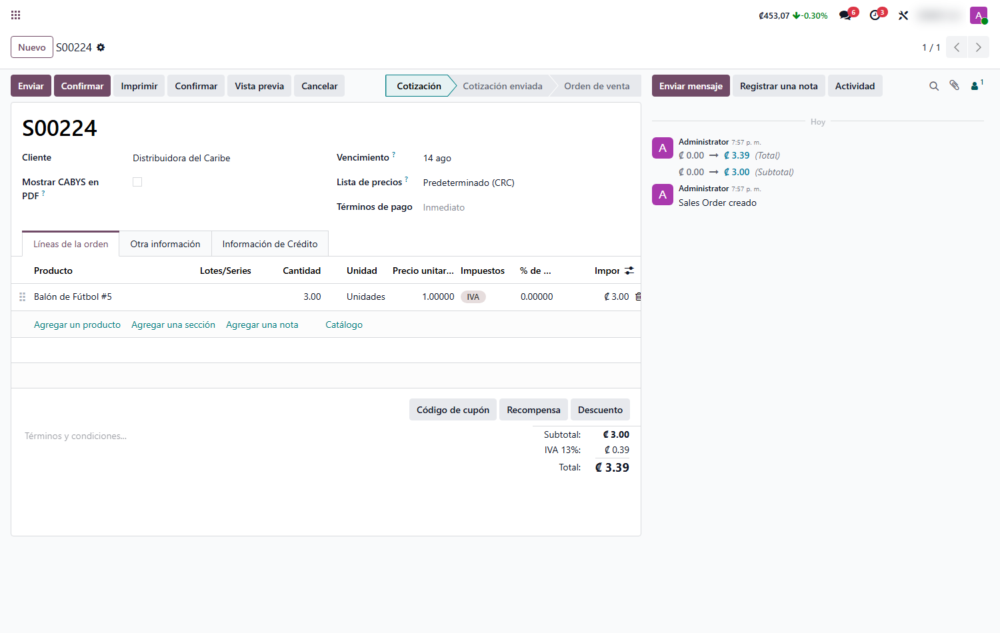

Analíticas por Sucursal
Asigna la cuenta analítica correcta de cada sucursal de forma automática, en ventas, punto de venta, facturas e inventario. Sin que nadie tenga que elegirla a mano.
Capturas del proyecto
01 / 05




Reportar resultados por sucursal sin depender del criterio de cada usuario
Cuando una empresa opera varias tiendas o sucursales, saber cuánto vende y cuánto cuesta cada una exige etiquetar cada operación con su cuenta analítica. Hacerlo a mano es lento y propenso a errores: basta que un cajero olvide la analítica para que el reporte de esa sucursal quede incompleto.
Este módulo elimina ese trabajo manual: define la regla una sola vez (sucursal → plan → cuenta por categoría) y a partir de ahí cada venta, factura, movimiento de inventario y devolución queda registrado automáticamente con la analítica de su sucursal, de punta a punta.
Funcionalidades clave
-
Asignación automática
La cuenta analítica de la sucursal se completa sola al agregar el producto.
-
Configuración por categoría
Un mapeo por categoría de producto; los productos nuevos lo heredan.
-
Cobertura total
Funciona en Ventas, Punto de Venta, Facturas e Inventario.
-
Por sucursal y categoría
La misma categoría puede tener distinta analítica en cada sucursal.
-
Reportes consistentes
La analítica fluye de la venta a la factura, el inventario y las devoluciones.
-
Cero trabajo manual
Se configura una vez; después opera sola, sin intervención del usuario.
Tecnología detrás del producto
¿Necesitás resultados claros por cada sucursal?
Configuro las analíticas de tus tiendas para que cada venta se registre sola en la sucursal correcta.